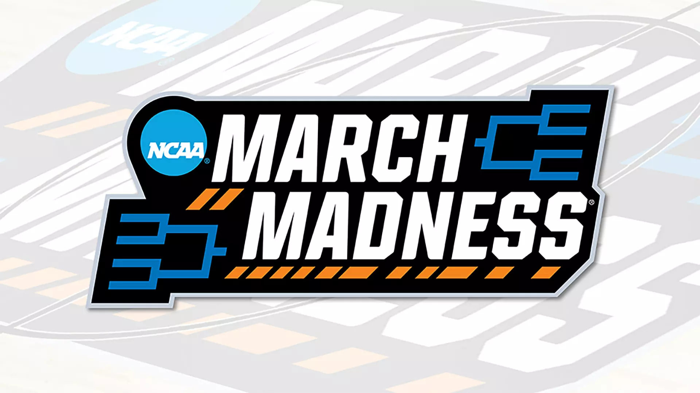
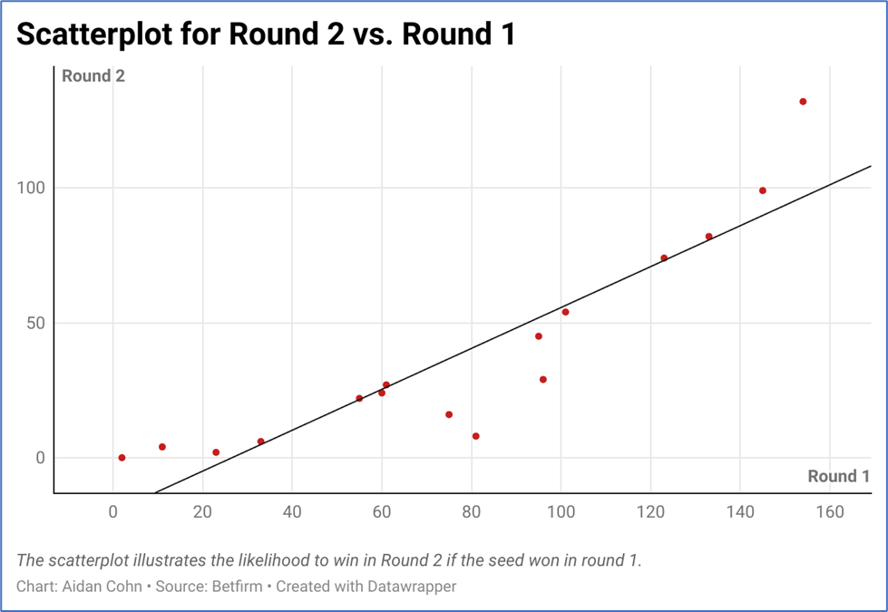
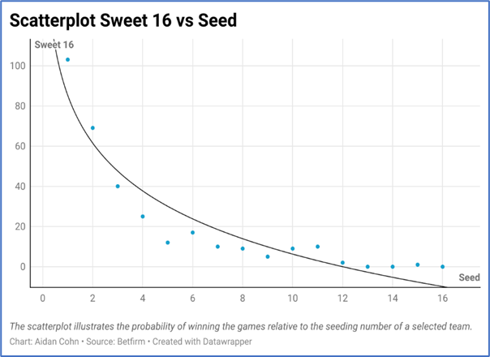
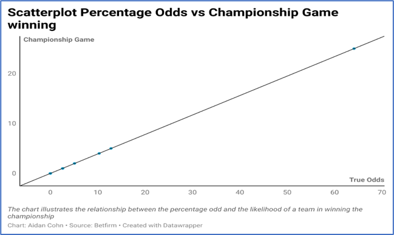
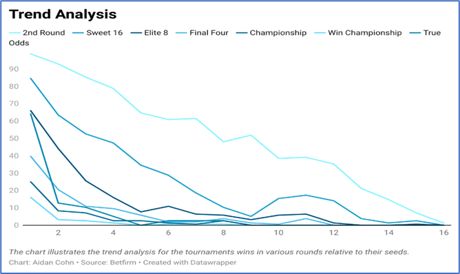

March Madness 2025
May 5th, 2025
Sporting events attract excitement and thrill, heightening people’s anticipation surrounding the tournament. The process enhances filling out the bracket and analyzing the teams to attain the bracketology, which involves outcome prediction of games in the tournament. Bracketology seeks to comprehend who would win or lose in the tournament, forming the foundational excitement part of March Madness. The graph used data visualization for sporting events involved in March Madness, which is linked explicitly with the NCAA division1 men’s basketball tournament held each spring as a single elimination tournament. March Madness every year brings such excitement to the fans, bracket makers and sports fans around the world. March Madness comprises the 68-team tournament with top-ranked teams from varying conferences battling to become the national champions.
March Madness could benefit from statistics by using multiple statistics and trends to evaluate the correlation between the number of seeds and the likelihood of success in a championship. A major key is the process of bracketology, which is very important ein ranking the seeds. Lunardi (2025) notes that in college basketball offseason, bracketologists work on predicting the succeeding season’s 68 fields, enhanced by tracking the occurring transfers of players from one team to another, the NBA draft entry and portal maneuvering from the comprehensive roster of the teams. The analysts use the rosters to predict the team’s offensive and defensive efficiency, which aid in ranking every conference. Jones (2025) notes that teams that earn the top seed in the NCAA tournament gain a higher advantage and probability of winning the championship. Previous information indicates that number-one seeds have four times the likelihood of winning the tournament than the next-best seed. Jones (2025) states that historical winning percentages suggest that 85% of number three seeds make it to the second round, but only 11% make it to the final four. The information is imperative in the NCAA, especially in the growing Name, Image, and Likeness (NIL), allowing athletes to benefit through endorsement while allowing the college team to select the best players to guarantee a win in the tournament.
Data Analysis and Visualization
The analysis and data visualization seek to show whether there is a statistical likelihood of winning each round based on the seed. Besides, the data analysis will help examine the odds of a seed being upset or the best odds percentage for a higher seed to go further in the tournament.
The scatterplot above illustrates a positive correlation between the seeds winning the second round following a win in the first round of the tournament. The scatterplot shows us that a team securing the first seed has the best chance of winning the tournament. The line of best fit indicates that the probability of winning in the second diminishes with a first-round loss.
The scatterplot illustrates a negative correlation between Sweet 16 and seeds, demonstrating that a team in Seed One has the highest likelihood of progressing to Sweet 16, followed by Seed two, three, and four. In contrast, another seed has a minimal probability of progressing to Sweet 16. The line of best fit demonstrates that the Five seed to Seed 16 has an almost equal chance of making or failing to make it to Sweet 16, revealing the potential excitement and wonder surrounding the tournament for everyone's bracket
The chart illustrates a positive correlation between the championship-winning probability based on the predicted True odds for the selected seed. From the chart above, it is apparent that as the percentage odds increase, there is a corresponding increase in the likelihood of the team winning and progressing through the various tournament rounds.
The line chart above ascertains Mike Pappa’s (2025) argument that the team in seed 1 has four times the probability of winning the tournament, significantly influencing the spectators probability of selecting that team. The chart illustrates the increased likelihood of the 1 seed winning in all rounds. The trend analysis chart also confirms the influence of a high odd percentage on team winning, whereby most college basketball teams, over the years, reveal a significantly high likelihood of winning the round and the final championship tournament.
Source Component
The study consisted of complex information analysis involving the bracketology and seeding in March Madness held towards the middle of march and end in April.. As a result, the study employed interviews with various live sources who were instrumental in comprehending the data and interpreting the findings obtained from the data analysis and visualization process. The instrumental live source was Mike Pappas. Mike Pappas is my father’s close friend who works in basketball. The close association with my father gave me an upper hand to conduct an interview that aided in informing the story about bracketology and March Madness.
Conclusion
March Madness is a straight connect into bracketology and seeding that occurs as a result of multiple in season games, and conference tournament outcomes across the country The process involves incorporating information such as player transfers, aiding the bracketologist in ranking the team in seeds, and reflecting the likelihood of the team winning in the tournament. Based on historical information and correlational analysis conducted using the scatterplot, it is apparent that the team ranked as the one seed has the highest probability of winning in all tournament rounds and making it to the final championship game. Finding out the one seed is the highest chance to win is no surprise but the numbers do show that anything can happen in March!
References
Jones, J. (2025, April 15). Bracketology: NCAA Tournament Odds by Seed. Betfirm. https://www.betfirm.com/seeds-national-championship-odds/
Lunardi, J. (2025). Men's Bracketology: 2026 NCAA Tournament. Espn. https://www.espn.com/espn/feature/story/_/page/bracketology/ncaa-bracketology-2026-march-madness-men-field-predictions